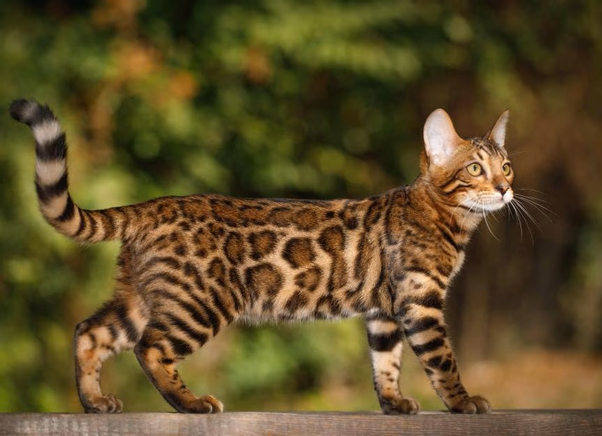

Bengal cats are a hybrid breed created by crossing an Asian leopard cat with a domestic cat. They are known for their exotic, spotted coats and energetic personalities.
They are highly intelligent and often enjoy playing in water, which is unusual for a domestic cat!